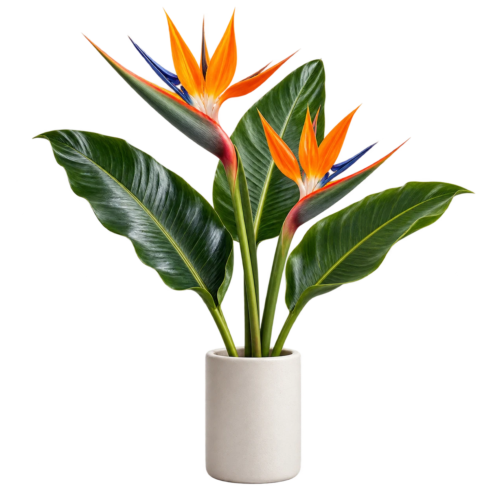

Déposez.Drop it.
Glissez votre image dans l’outil. Une photo produit, un portrait, une nouvelle idée.Drop your image into the app. A product shot, a portrait, a new idea.
Le détourage, simplementBackground removal, simplified
Laissez le fond derrière vous. Détourez vos images, affinez les contours et repartez avec un PNG transparent. Tout simplement.Leave the background behind. Isolate your subject, refine the edges, and take away a transparent PNG. Simple as that.

Moins de manipulationsFewer steps
Glissez votre image dans l’outil. Une photo produit, un portrait, une nouvelle idée.Drop your image into the app. A product shot, a portrait, a new idea.
Laissez le moteur isoler le sujet, puis ajustez les contours avec le curseur de détourage.Let the engine isolate the subject, then fine-tune the edges with the cutout slider.
Téléchargez votre PNG transparent, automatiquement recadré. Prêt pour la suite.Download your transparent, automatically cropped PNG. Ready for what comes next.
Le petit atelierThe little playgroundINTERACTIFINTERACTIVE
Un fond transparent, c’est de la place pour vos idées. Essayez quelques couleurs sur cette illustration.A transparent background makes room for your ideas. Try a few colors on this illustration.
Fond transparent
PNG source transparent. Les couleurs sont une prévisualisation.Transparent source PNG. Background colors are a preview.
Bien pensé, jusqu’aux pixelsThought through, down to the pixels
Deux moteurs sont proposés : remove.bg, sélectionné par défaut, envoie l’image à un service externe ; le mode local exécute le modèle dans votre navigateur après son téléchargement.Two engines are available: remove.bg, selected by default, sends the image to an external service; local mode runs the model in your browser after downloading it.
L’outil repère les pixels visibles, enlève l’espace transparent autour du sujet et conserve une bordure de 1 px, dans les limites de l’image.The app locates visible pixels, removes transparent space around the subject and keeps a 1 px margin within the image bounds.
Le curseur de détourage ajuste les contours de −50 à 200. Le mode local propose aussi trois modèles : u2net, u2netp et u2net_human_seg.The cutout slider adjusts edges from −50 to 200. Local mode also offers three models: u2net, u2netp and u2net_human_seg.
Un navigateur récent. Le mode local nécessite le téléchargement initial des bibliothèques et du modèle. Le mode remove.bg nécessite un serveur PHP configuré avec une clé API et des crédits disponibles.A modern browser. Local mode requires an initial download of libraries and the model. The remove.bg mode requires a PHP server configured with an API key and available credits.
À vous de créerYour turn to create
Un outil pour vos images. De l’espace pour vos idées.A tool for your images. Room for your ideas.